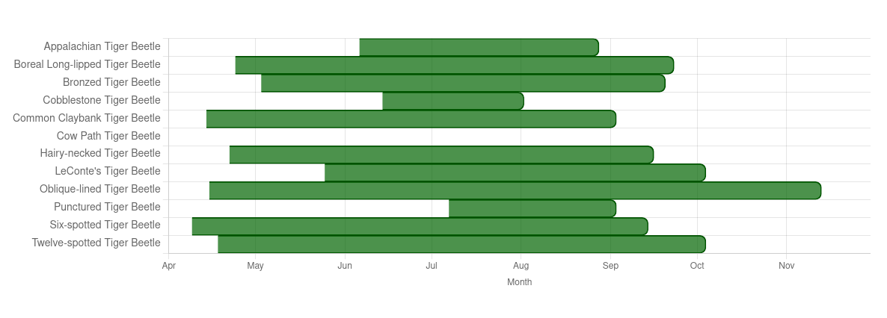

| Species | Scientific Name | From (earliest) | To (latest) | Notes |
|---|---|---|---|---|
| Appalachian Tiger Beetle | Cicindela ancocisconensis | June 6 | August 28 | Spring-fall; peaks May–July |
| Boreal Long-lipped Tiger Beetle | Cicindela longilabris | April 24 | September 23 | Spring-fall; peaks May–July |
| Bronzed Tiger Beetle | Cicindela repanda | May 3 | September 20 | Spring-fall; bimodal peaks May–June & Aug–Sep |
| Cobblestone Tiger Beetle | Cicindela marginipennis | June 14 | August 2 | Summer only; peak July; endangered in NB |
| Common Claybank Tiger Beetle | Cicindela limbalis | April 14 | September 3 | Spring–summer; peaks May–July |
| Cow Path Tiger Beetle | Cicindela purpurea purpurea | July 16 | July 16 | Known from a single record on July 16, 2020 (Reggie Webster). Likely active earlier in spring (April–June) based on regional patterns, but no other sightings confirmed in NB despite searches. |
| Hairy-necked Tiger Beetle | Cicindela hirticollis | April 22 | September 16 | Spring–fall; peaks May–July; often on sandy beaches/rivers |
| LeConte's Tiger Beetle | Cicindela scutellaris lecontei | May 25 | October 4 | Spring–fall; peaks May–June |
| Oblique-lined Tiger Beetle | Cicindela tranquebarica | April 15 | November 13 | Spring–fall; very extended season in some years |
| Punctured Tiger Beetle | Cicindela punctulata | July 7 | September 3 | Summer active |
| Six-spotted Tiger Beetle | Cicindela sexguttata | April 9 | September 14 | Early spring peak; some to Sep |
| Twelve-spotted Tiger Beetle | Cicindela duodecimguttata | April 18 | October 4 | Spring–fall; peaks May–June & Aug–Sep |
Adult Flight Periods in New Brunswick
Observed seasonal windows based on available records (earliest/latest month-day, ignoring year). Click headings below to expand sections.
Expand Detailed Flight Table
Expand Visual Flight Bar Chart

Static image of flight periods (no hover tooltips). See detailed table above for exact dates and notes.
Flight periods derived from NB observations. Rare species (e.g. Cow Path) have limited data. Ranges may expand with new sightings.